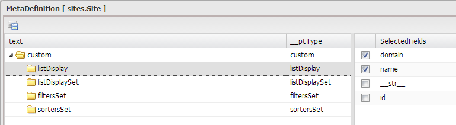
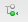

Configuration¶
L’option configuration donne accès au sous-ensemble de propriétés de personnalisation de base. Cette option est visible pour les utilisateurs qui ont des droits d’accès limités à l’application.

Figure 35 : option configuration du menu.
Afficher ou cacher des colonnes de la grille¶
Figure 36 : afficher/cacher les champs
- Cliquez sur la propriété « listDisplay » de la liste.
- Pour afficher ou cacher des champs de la grille, cochez ou décochez la case située à gauche du nom du champ.
- Enregistrez les changements en cliquant sur le bouton
 .
.
Changer l’ordre d’apparition des colonnes sur la grille¶

Figure 37 : changer l’ordre d’apparition des champs
- Cliquez sur la propriété « listDisplay » de la liste.
- Glissez et déposez le champ vers le haut ou vers le bas.
- Enregistrez les changements en cliquant sur le bouton .
Définir différentes configurations de colonnes¶
ListDisplaySet : à vérifier le fonctionnement.
Définir les critères de recherche pour la fonction rechercher¶
- Cliquez sur la propriété « filtersSet » de la liste.
- Cliquez sur le bouton  pour ajouter un nouveau filtre.
- Entrez le nom de la colonne.
- Enregistrez les changements en cliquant sur le bouton .
- Pour supprimer un tri sélectionnez-le et cliquez sur le bouton
 .
.
Définir les critères de tri pour la fonction classer¶
- Cliquez sur la propriété « SortersSet » de la liste.
- Cliquez sur le bouton pour ajouter un nouveau tri.
- Entrez le nom de la colonne.
- Enregistrez les changements en cliquant sur le bouton .
- Pour supprimer un tri sélectionnez-le et cliquez sur le bouton .